Carillas
Láminas finas que se adhieren a la cara visible del diente para corregir color, forma, pequeños desgastes o espacios.
Inicio/Tratamientos/Estética dental
Mejoramos el color, la forma y la armonía de los dientes respetando al máximo el diente natural. Buscamos resultados que se vean naturales, no artificiales.
Estos son los motivos más habituales por los que nos consultan. Todos tienen solución en mayor o menor medida.
Sus dientes se han oscurecido o tienen manchas.
Los bordes están desgastados o tienen pequeñas fracturas.
Hay espacios entre algunos dientes.
Algún diente tiene una forma o tamaño diferente al resto.
Tiene empastes o coronas antiguas que se notan.
Quiere mejorar su sonrisa sin que parezca artificial.
Elegimos el tratamiento más conservador que consiga el resultado que usted busca.
Láminas finas que se adhieren a la cara visible del diente para corregir color, forma, pequeños desgastes o espacios.
Aclara el tono de los dientes naturales bajo control profesional, valorando antes el estado de encías y esmalte.
Estudiamos proporciones, forma y color en relación con su cara y sus labios para planificar el resultado antes de tratar.
Fotografías clínicas de pacientes tratados en la clínica. En la primera visita le enseñamos casos parecidos al suyo para que sepa qué esperar.
Dientes con manchas, bordes desgastados y espacios entre ellos. Con carillas se igualan el color, la forma y la proporción de los dientes que se ven al sonreír.
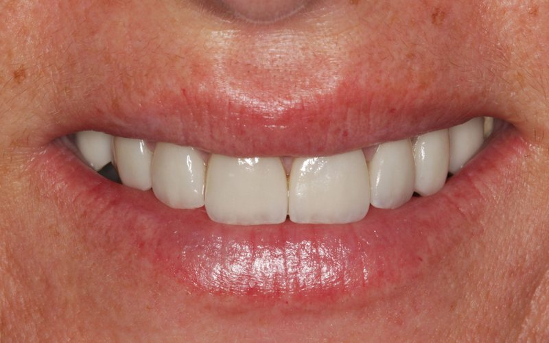
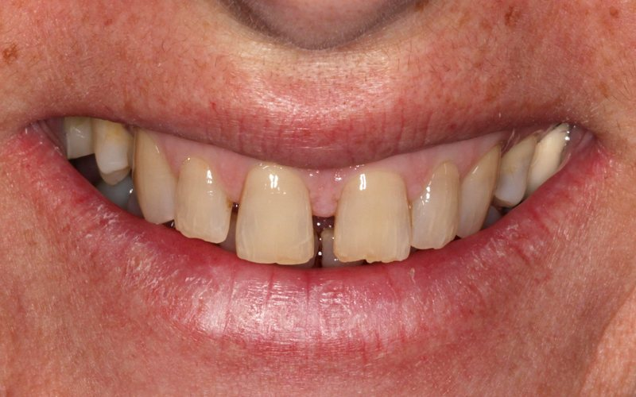
Restauraciones antiguas, manchas y bordes irregulares en los dientes que se ven al sonreír. El tratamiento devuelve a la sonrisa un color luminoso y uniforme y una forma en armonía con los labios.
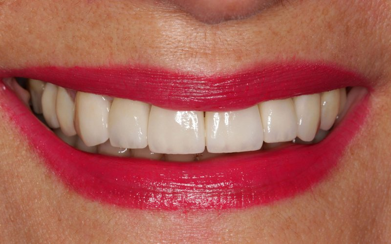
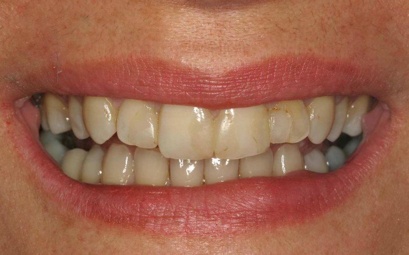
Incisivos desgastados, con bordes rotos, manchas y empastes antiguos. Las carillas devuelven a los dientes su longitud y un color uniforme, en armonía con el resto de la sonrisa.
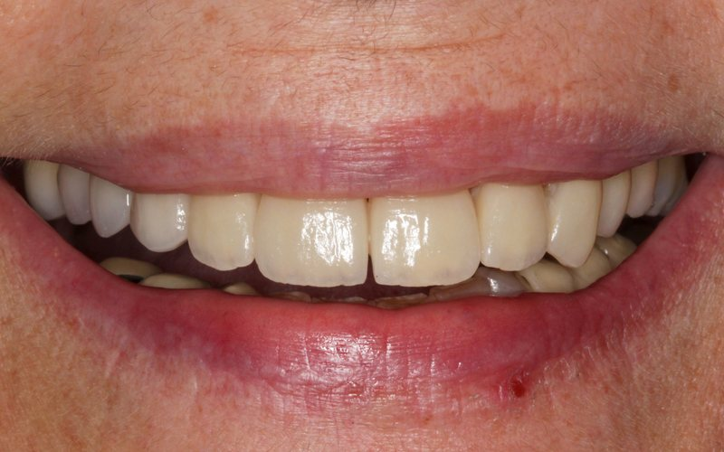
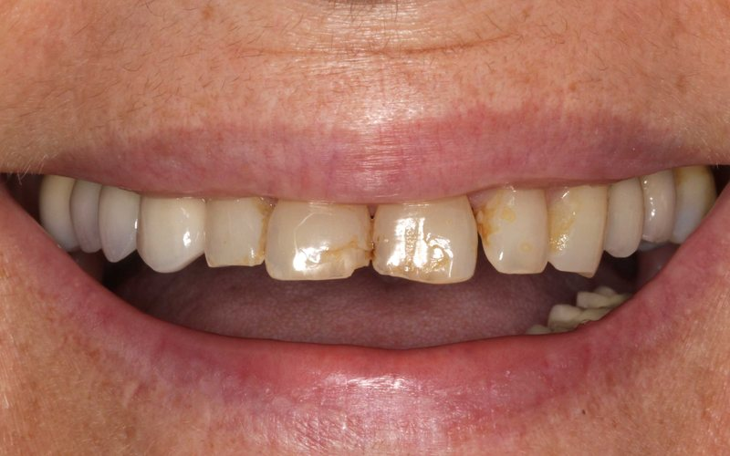
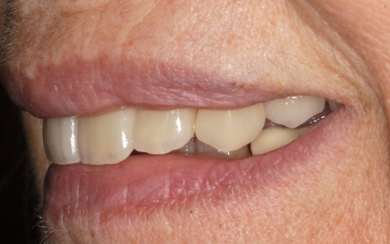
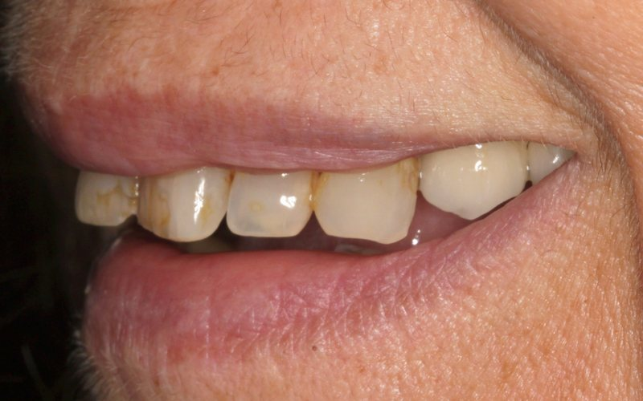
Aclarar el color de los dientes naturales sin cambiar su forma. La guía de color que aparece en las fotos permite medir el cambio: de un tono A3,5 a un A1.
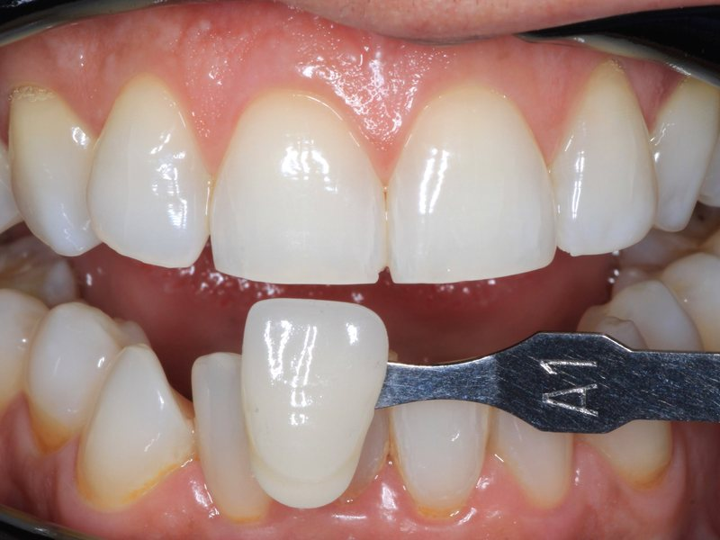
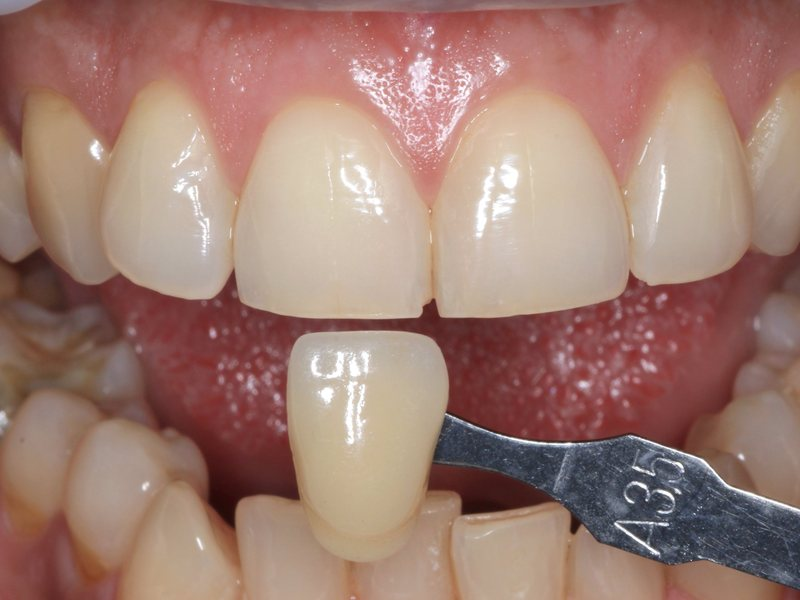
Dientes sanos y bien alineados, pero con un tono amarillento. Con el blanqueamiento cambia solo el color: la forma y la posición de los dientes son exactamente las mismas.
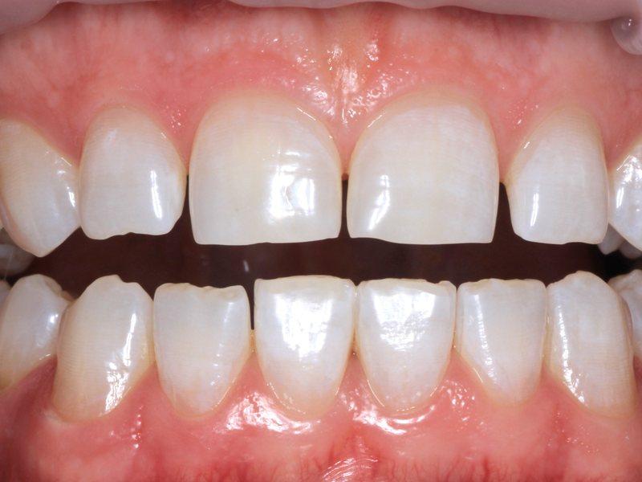
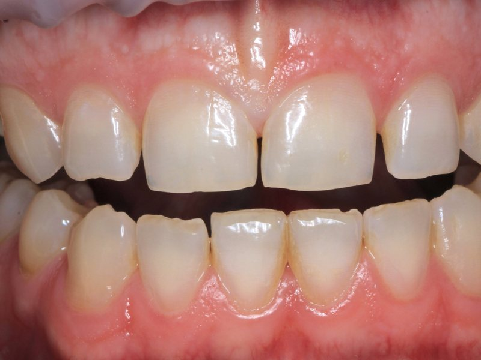
Imágenes de pacientes de la clínica publicadas con su consentimiento. Los resultados varían en cada caso.
En cada momento sabrá qué vamos a hacer, cuánto durará y cuánto costará.
Escuchamos qué quiere cambiar y revisamos la salud de dientes y encías.
Fotografías y análisis de la sonrisa para planificar forma, tamaño y color.
Blanqueamiento, carillas o la combinación acordada, con presupuesto cerrado.
Le damos pautas para mantener el resultado y revisamos su evolución.
Máster en Estética y Rehabilitación Oral por la Universitat Politècnica de Catalunya, con más de 35 años de práctica privada en Madrid.
Muchos de nuestros pacientes llevan décadas confiándonos su salud bucodental. Hoy vienen también sus hijos y nietos.
Más de 35 años ejerciendo en el mismo barrio.
Estudiamos la boca completa antes de proponer nada.
Opciones, plazos y precio claros antes de empezar.
Le explicamos cada paso y resolvemos sus dudas.
Si su duda no está aquí, llámenos al 913 594 950 y se la resolvemos.
Buscamos siempre la mínima preparación posible. En algunos casos apenas es necesario tocar el diente; en otros se requiere un pequeño ajuste. Se lo explicamos con claridad antes de empezar.
Realizado y supervisado por un profesional, tras comprobar que dientes y encías están sanos, es un tratamiento seguro. Puede aparecer sensibilidad temporal, que suele desaparecer al terminar.
Depende de sus hábitos: el café, el té, el vino o el tabaco hacen que el color vuelva antes. Le indicaremos cómo mantenerlo.
El objetivo es que no. Elegimos forma y color para que encajen con el resto de sus dientes y con sus rasgos.
Depende del tratamiento y del número de dientes. Tras la valoración le entregamos un presupuesto cerrado por escrito.
La información de esta página es orientativa. El tratamiento adecuado, sus plazos y su coste se determinan siempre tras una valoración individual en consulta.
Atención con cita previa. Para cualquier consulta o urgencia durante nuestro horario, llámenos por teléfono.
Calle del Dr. Fleming, 54Chamartín · 28036 Madrid
| Lunes | 8:00 – 15:00 |
|---|---|
| Martes | 8:00 – 15:00 |
| Miércoles | 8:00 – 15:00 |
| Jueves | 8:00 – 15:00 |
| Viernes | 9:00 – 13:00 |
| Sábado | Cerrado |
| Domingo | Cerrado |
Llámenos y le damos cita en nuestra clínica de la calle del Dr. Fleming.